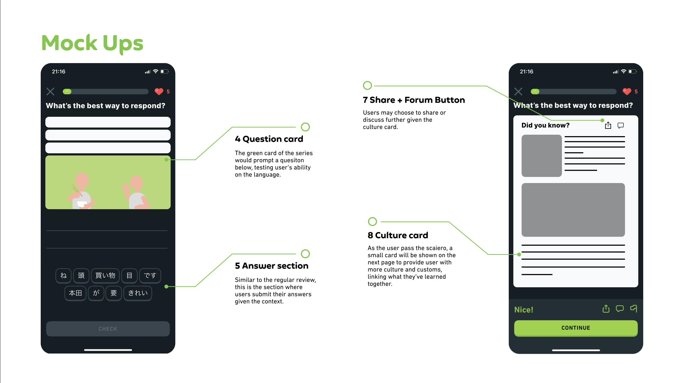
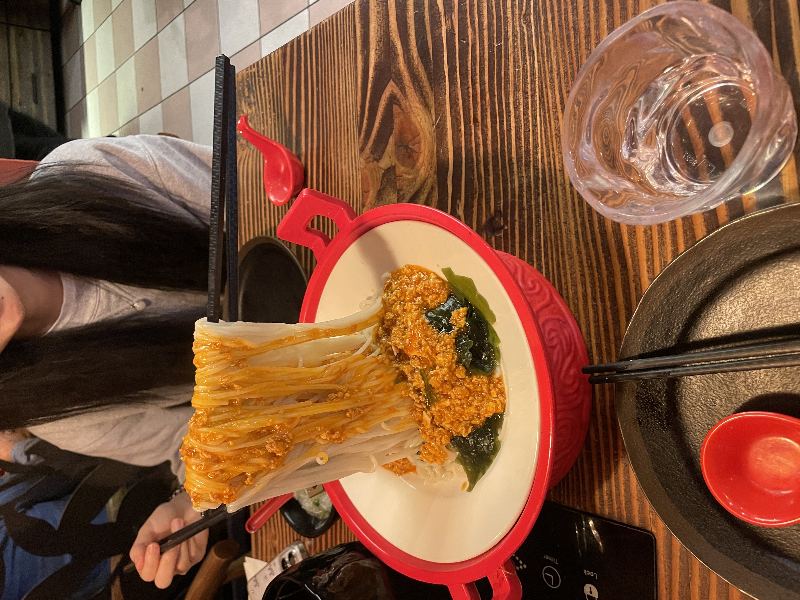
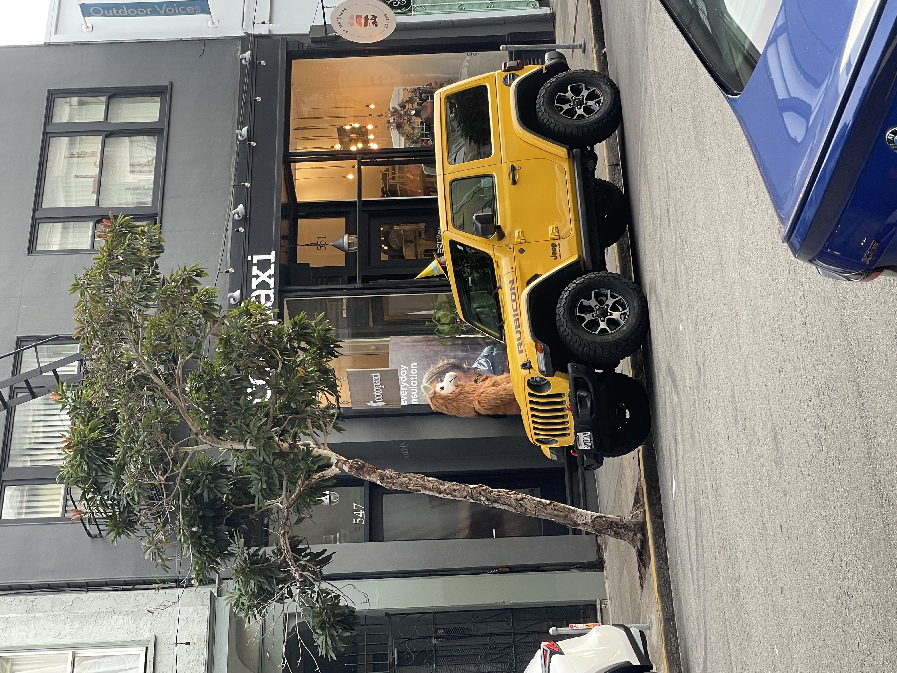

Ongoing Journey - October 2024
Blog Change
 Mona Lisa for cheap
Mona Lisa for cheap
Going to test a more free flowed version of blog writing, I will write however many notes in my blog each month instead of picking 4.
I have a Blog project on my Things3, whenever I have a thought I would put it in a pool, and I pick 4 at the end of the month to compose a blog for the month.
This helped me condense my learnings, though eversince I graduated it felt like new learnings comes on a daily/weekly bases so want to try a more stressed free way of writing.
Problem to Solve
Went back and checked mine in 2022, surprised Duolingo touch so little on culture in language learningCrystal started her Duolingo take home and made a beautiful feature focusing on the power users, giving them more motivations to push further. Chatted with tilly and she offered a different reasoning: Duolingo rn struggles to make money (duo max, english test, etc) -> focus on monetizations -> build a feature that lets the user pay more.
Tilly is always very progmatic towards problem solving, reminded of the first principle. For any PM takehomes this seems like the best way to apporach: asked to do a feature -> what does the company wnat right now -> what kind of metric are they tracking -> what kind of feature can be built that boost the metric, very humbling to learn.
Tutoring Others
About Tilly, the job coaching business is quite well, and she is thinking about expanding it further.
I always felt a bit against the business, entry level PM is extremely competitive given the easy entry (you have a 1% chance of getting in despite been above average), with no standards of been ‘good’ other than previous track records (again, makes it very easy to snowball late but hard to get in early), and most of the ‘correct’ way of getting a job has all been established online for free, not to mention Tilly’s experience rarely translates into her coaching.
杯水车薪 was what I was thinking, when experience/practice takes up 80%+ of the success, what was taught in the session felt worthless, especailly given the price. And adding a layer more of irony the so called ‘career coaches’ I’ve seen are all junior PMs! How are they sharing advices when they themselves can’t figure out the role / next step in their own life…
With all that been said I guess I felt concerned for Tilly, I am afraid she thinks the content she coaches is the key metric of success. I am scared bc this way she would evaluate her success directly with the offer her mentees gotten, makes her quite vunlerable as now the mentee’s effeort matters much more than hers (which she can’t control).
People reaches out to Tilly partly for her characters, but mostly for her fame. 6 PM internships + countless final round + founding a PM community + founding a start up + active and well networked with multiple senior PMs in the field, like literally, you can’t get that many buffs even when you are in a game.
With that much fame people who reaches out naturally have expectations on content and materials been taught, and to concrete my fear a bit further, I am afarid that Tilly would get stressed out not meeting the expectations on the outcome of her mentees.
So I was thinking in another way, the reason why there are so many junior PMs in the field of ‘career coaching’ is not because somehow they happened to know the field of PMs better, but the exact opposite - they understand the struggles the PM-wanna-bes are going through, and can offer emotional supports given their experience.
So, if Tilly ever felt down, I will try telling her this: these people reaches out to Tilly because they don’t believe they can be PMs. Tilly, instead of giving them the skillsets, gives them the courage of trying. So it doesn’t matter whether they learned or not, it’s about the mentee thinking that they learned, hence having the courage to try & apply.
师傅领进门，修行在个人. I am really, really happy that Tilly is trying out a different side of jobs & seems like she is enjoying it, I guess I am just too in love that I felt very attached to what she does / how she feels, sigh :(
Time Spent vs. Quality Time
Look floating chopsticksA fun story that I saw:
陶艺老师在开学第一天就宣布，他将把全班同学分成两组。他说，坐在工作室左侧的同学们，将根据他们的作品数量来评分，而坐在右侧的同学们，将根据作品的质量来评分。他的评分方法很简单：在课程的最后一天，他会带来他的浴室秤，对”数量”组的作品进行称重：50 磅的陶罐能得到”A”等级，40 磅的能得到”B”等级，以此类推。然而，对于被评价为”质量”的同学们，他们只需要制作出一个——尽管它必须是完美的——陶罐就可以得到”A”等级。
然而，到了评分的时候，一个有趣的事实浮现出来：最优质的作品都是由那些被评为”数量”的组别制作出来的。看起来，”数量”组在忙碌地大量制作作品的过程中——并从他们的错误中吸取教训——而”质量”组的同学们却在思考如何制作出完美的作品，结果他们的努力成果除了一些宏大的理论和一堆无用的黏土，别无他物。
This week Tilly complians there was little quality time that we spent together, reminded me of this story.
Ever since I’ve started the new job most of my time where physcially contributed to San Jose. Which makes me wonder, 我之前在旧金山也没和 tilly 有啥 quality times 啊.
It’s the amount of time that matters, especailly in early relationships. Even arguments and simply be sitting together helps you learn someone better, which goes to the pot analogy, helps you to make the next pot better.
It’s an intersting shift of mindset, from ‘how can I spent better time with her’ to ‘how can I spent more time with her’, surprisingly the answers for both are very similar at this moment after a year of dating, I would take this as a good sign :).
Bordem in Life
Halloween party on Hayes street Cotopaxi asked for a 魔法少女 & a llama hahahContinue on the life in San Jose, it has been, a bit quiet in my life.
Most of the workday is occupied with work, and ever since I blocked Instagram, WeChat, Zhihu and now RED, most of the world event takes around 2X to hit me lol.
Continue on the ‘one need 2-5 hours of free time’ narrative, it also matters the amount of focus you have, to quantify it, about three project is a good balance for me. A few I quickly get bored of the project, too much I ended up completing very little.
Currently I am exploring a new way of living, writing a story and helping a community, all three I happened to be intersted in, thus feeling satiated.